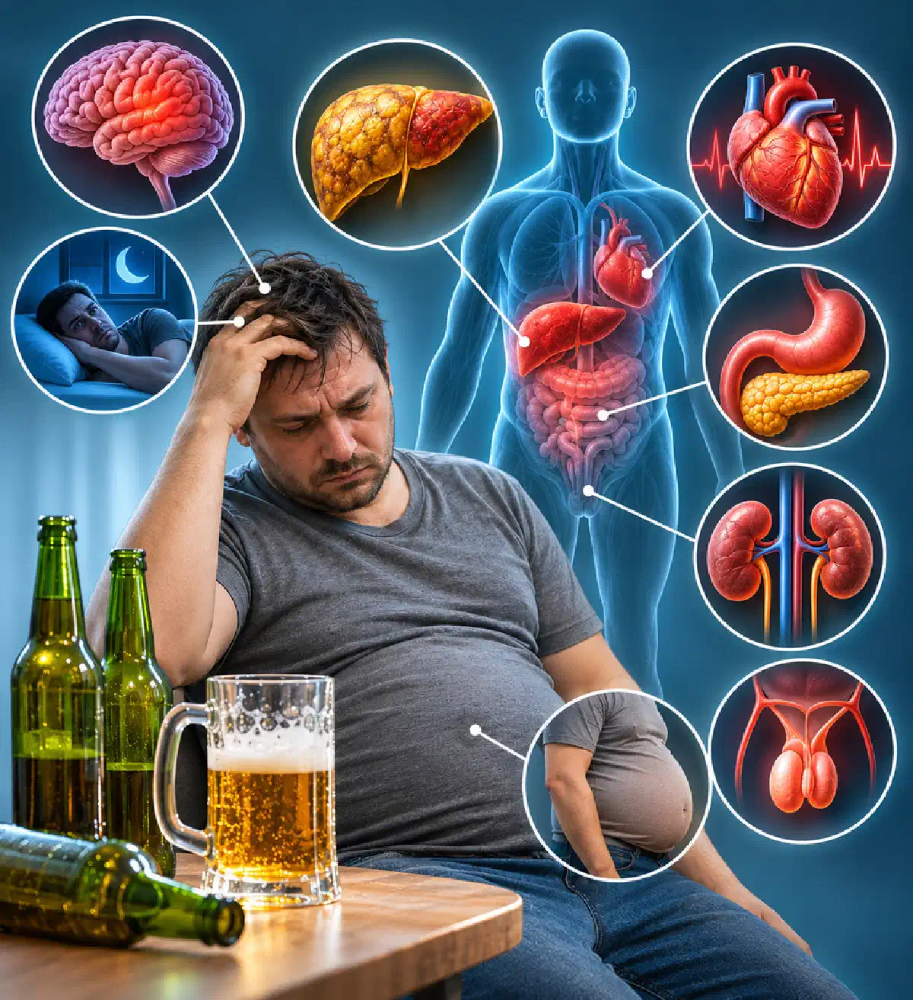

+38(068) 79 72 782
+38(068) 79 72 782Що буде з організмом, якщо пити пиво щодня
Наслідки для здоров'я та ризик алкоголізму


Безкоштовна консультація, працюємо цілодобово 24/7
Наслідки для здоров'я та ризик алкоголізму

Дата написання: 3 лист. 2026 р.
Останнє оновлення: 3 лист. 2026 р.
Багато людей сприймають пиво як відносно нешкідливий алкогольний напій, особливо якщо вживають його після роботи або під час відпочинку. Однак щоденне вживання пива негативно впливає на печінку, серце, головний мозок і нервову систему, підвищуючи ризик хронічних захворювань та алкогольної залежності. Наслідки регулярного вживання спиртного не завжди проявляються одразу. Людина може довго не помічати змін, хоча в організмі вже відбуваються порушення обміну речовин, підвищується артеріальний тиск і поступово формується залежність. Повністю безпечного для здоров’я рівня вживання алкоголю не встановлено. Розглянемо, що буде з організмом, якщо пити пиво щодня, наскільки небезпечні щоденні 0,5–2 літри та чи можна відновити здоров’я після відмови від алкоголю.
При щоденному вживанні пива організм регулярно зазнає впливу етилового спирту. Алкоголь швидко всмоктується в кров, поширюється тканинами та переважно переробляється в печінці. У процесі метаболізму утворюється ацетальдегід — токсична речовина, здатна пошкоджувати клітини та посилювати окислювальний стрес. Постійний вплив алкоголю порушує обмінні процеси та підвищує ризик хронічних захворювань. Регулярне вживання пива може супроводжуватися накопиченням жиру в печінці, підвищенням артеріального тиску, погіршенням пам’яті, порушеннями сну та збільшенням маси тіла. Поступово також формується звичка вживати алкоголь щодня. Вираженість наслідків залежить від кількості випитого, міцності напою, тривалості вживання та стану здоров’я.
Небезпека щоденного вживання пива пов’язана не лише з кількістю алкоголю, а й із регулярністю його надходження в організм. Навіть невеликі дози етанолу при систематичному вживанні можуть підвищувати ризик окремих захворювань. Пиво містить той самий етиловий спирт, що й горілка, вино та інші алкогольні напої. Тому думка про безпечність слабкого алкоголю є помилковою. Особливо небезпечне щоденне вживання пива при захворюваннях печінки, серця, цукровому діабеті та ожирінні. Тривалий вплив алкоголю підвищує ризик гіпертонії, інсульту, ураження печінки та деяких онкологічних захворювань. Шкода від пива визначається насамперед кількістю етанолу, що надходить в організм, а не міцністю чи назвою напою.
Одна пляшка пива об’ємом 0,5 літра та міцністю 5% містить приблизно 20 грамів чистого етилового спирту. При щоденному вживанні тижневе алкогольне навантаження досягає близько 140 грамів. Навіть така кількість може сприяти підвищенню артеріального тиску, погіршенню сну, збільшенню маси тіла та поступовому формуванню алкогольної залежності. Особливо насторожує ситуація, коли людина перестає уявляти вечір без пляшки пива, відчуває роздратування через неможливість випити або починає збільшувати звичну дозу. Щоденні 0,5 літра пива не можна вважати безпечною нормою, особливо за наявності хронічних захворювань.
Вживання 1–2 літрів пива щодня створює значне алкогольне навантаження. Один літр напою міцністю 5% містить приблизно 39 грамів етанолу, а два літри — близько 79 грамів. Такі об’єми підвищують ризик алкогольного ураження печінки, гіпертонії, порушень серцевого ритму та формування залежності. При тривалому вживанні людина може помічати постійну втому, збільшення живота, погіршення працездатності, дратівливість і порушення сну. Поступово розвивається толерантність до алкоголю, коли звична кількість пива перестає викликати попередні відчуття та виникає бажання збільшити дозування. При регулярному вживанні таких об’ємів рекомендується пройти консультацію нарколога та оцінити стан внутрішніх органів.
Печінка є основним органом, який переробляє етиловий спирт. Тому при щоденному вживанні пива вона постійно зазнає впливу токсичних продуктів алкогольного обміну. Одним із ранніх наслідків стає стеатоз печінки — накопичення жиру в печінкових клітинах. Захворювання часто перебігає без виражених симптомів. При тривалому вживанні спиртного можуть розвиватися алкоголь-асоційований гепатит, фіброз і цироз печінки. Ризик залежить від кількості алкоголю, харчування, маси тіла та супутніх захворювань. Насторожити повинні постійна слабкість, зниження апетиту, важкість у правому підребер’ї та пожовтіння шкіри. Однак відсутність скарг не виключає ураження печінки. Для діагностики застосовуються біохімічні аналізи крові, УЗД та методи оцінки фіброзу. Основою профілактики прогресування захворювання є відмова від алкоголю.
Регулярне вживання алкоголю може підвищувати артеріальний тиск, збільшуючи ризик інсульту, інфаркту та інших серцево-судинних ускладнень. При вживанні великих об’ємів спиртного зростає ймовірність порушень серцевого ритму, включаючи фібриляцію передсердь. Тривале надмірне вживання алкоголю також може призводити до алкогольної кардіоміопатії. Людина може помічати прискорене серцебиття, перебої в роботі серця, задишку, зниження фізичної витривалості та набряки ніг. При появі подібних симптомів рекомендується обстеження, що включає електрокардіографію, контроль артеріального тиску та за необхідності ехокардіографію. Відмова від алкоголю здатна покращити стан серцево-судинної системи, однак за наявності сформованих захворювань потрібне додаткове лікування.
Етиловий спирт впливає на центральну нервову систему, змінюючи роботу нейромедіаторів, які відповідають за настрій, пам’ять, поведінку та сон. Після вживання пива виникає короткочасне розслаблення, однак при регулярному впливі алкоголю можуть погіршуватися концентрація уваги, пам’ять, координація рухів та емоційна стійкість. При тривалому надмірному вживанні спиртного підвищується ризик алкогольної полінейропатії, когнітивних порушень і дефіциту вітаміну B1. Симптомами ураження нервової системи можуть бути оніміння кінцівок, погіршення пам’яті, хиткість ходи та зниження працездатності. При появі подібних порушень необхідне медичне обстеження та виключення інших можливих причин.
Пиво має сечогінну дію, оскільки етиловий спирт пригнічує виділення антидіуретичного гормону. Це призводить до збільшення утворення сечі та за певних умов може сприяти зневодненню. При вживанні великих об’ємів алкоголю можливі зміни водно-електролітного балансу, особливо при блюванні, недостатньому харчуванні або супутніх захворюваннях. Додатковим фактором ризику для нирок стає підвищення артеріального тиску, яке поступово пошкоджує ниркові судини. Особливо небажане вживання великих об’ємів пива людям із хронічною хворобою нирок, серцевою недостатністю та захворюваннями, що потребують обмеження рідини.
Алкоголь може подразнювати слизову оболонку шлунково-кишкового тракту та посилювати прояви наявних захворювань травної системи. При регулярному вживанні пива можливі печія, нудота, здуття живота, дискомфорт у шлунку та порушення випорожнень. Особливу небезпеку становить вплив алкоголю на підшлункову залозу. Тривале надмірне вживання спиртного є одним із факторів ризику хронічного панкреатиту. Сильний біль у верхній частині живота, особливо той, що віддає в спину та супроводжується блюванням, потребує термінової медичної оцінки. При захворюваннях підшлункової залози повна відмова від алкоголю є важливою частиною профілактики ускладнень.
Збільшення живота при регулярному вживанні пива найчастіше пов’язане з надлишком калорій та особливостями харчування. Етиловий спирт містить близько 7 кілокалорій на грам. Додаткову калорійність забезпечують вуглеводи напою та закуски, якими нерідко супроводжується вживання пива. При постійному перевищенні енергетичних потреб збільшується маса тіла та може накопичуватися вісцеральний жир, пов’язаний із підвищеним ризиком метаболічних захворювань. Однак «пивний живіт» не є самостійним медичним діагнозом. Абдомінальне ожиріння може розвиватися й у людей, які не вживають алкоголь. Відмова від пива, корекція харчування та регулярна фізична активність допомагають зменшити надлишкове надходження калорій.
Тривале вживання алкоголю, особливо у великих кількостях, може негативно впливати на чоловічу репродуктивну систему. Етиловий спирт здатний порушувати гормональну регуляцію, знижувати рівень тестостерону при тяжкому хронічному вживанні та погіршувати якість сперми. Чоловіки можуть відзначати зниження статевого потягу, порушення ерекції, постійну втому та погіршення фізичної витривалості. При цьому подібні симптоми можуть бути пов’язані не лише з алкоголем, а й із судинними, ендокринними або психологічними порушеннями. При появі проблем із потенцією рекомендується звернутися до лікаря для з’ясування причини та підбору лікування.
Жіночий організм також зазнає негативного впливу алкоголю. При зіставних об’ємах випитого концентрація етанолу в крові у жінок нерідко виявляється вищою через фізіологічні особливості. Регулярне вживання пива підвищує ризик захворювань печінки, артеріальної гіпертензії, порушень сну та алкогольної залежності. Особливе значення має встановлений зв’язок між вживанням спиртного та підвищенням ризику раку молочної залози. При тяжкому хронічному вживанні також можливі порушення менструального циклу та репродуктивної функції. Під час вагітності алкоголь протипоказаний незалежно від міцності напою, оскільки здатний негативно впливати на розвиток плода. Щоденне вживання пива не є безпечним ні для чоловіків, ні для жінок.
Багато людей п’ють пиво ввечері, вважаючи, що воно допомагає розслабитися та швидше заснути. Однак алкоголь порушує природну структуру сну та може погіршувати нічне відновлення організму. Після вживання спиртного людина іноді засинає швидше, але частіше прокидається вночі та відчуває втому вранці. Регулярне вживання пива також може супроводжуватися дратівливістю, тривожністю, емоційною нестабільністю та зниженням працездатності. Особливо несприятливо алкоголь впливає на людей із тривожними та депресивними розладами, оскільки короткочасне розслаблення може змінюватися посиленням неприємних симптомів. Якщо людина не може розслабитися або заснути без пива, це привід звернутися до фахівця та оцінити наявність залежності.
Негативний вплив алкоголю починається після його потрапляння в кров, однак швидкість розвитку помітних наслідків індивідуальна. У деяких людей погіршення сну, підвищення тиску або порушення травлення з’являються вже в перші тижні регулярного вживання. Протягом кількох місяців можуть збільшуватися маса тіла, змінюватися печінкові показники та формуватися стійка звичка вживати алкоголь. При багаторічному вживанні підвищується ризик хронічних захворювань печінки, серця, нервової системи та алкогольної залежності. Ці терміни умовні та не є обов’язковими стадіями розвитку захворювань. Навіть за відсутності скарг регулярне вживання пива може завдавати шкоди здоров’ю.
Пивний алкоголізм — побутова назва алкогольної залежності, що розвинулася переважно на тлі вживання пива. У медицині окремого захворювання з такою назвою немає. Залежність формується поступово під впливом нейробіологічних, психологічних і соціальних факторів. Етиловий спирт впливає на системи головного мозку, пов’язані із задоволенням, мотивацією та контролем поведінки. Спочатку людина вживає пиво для відпочинку, однак із часом звичка може перетворитися на стійку потребу. Виникають труднощі з відмовою, поступово збільшується кількість випитого та знижується контроль над вживанням. Особливість пивної залежності полягає в тому, що людина нерідко недооцінює проблему, оскільки не вживає міцний алкоголь. Алкогольна залежність визначається не видом напою, а порушенням контролю над вживанням і наслідками, що виникають. При появі характерних ознак рекомендується своєчасно розпочати лікування алкоголізму.
Перші ознаки алкогольної залежності часто проявляються не вираженим сп’янінням, а зміною звичок і поведінки. Людина починає регулярно відчувати бажання випити пиво після роботи або перед сном. Поступово звичне дозування збільшується, а спроби скоротити вживання стають безуспішними. За неможливості випити можуть з’являтися дратівливість, тривожність і внутрішнє напруження. Із часом погіршуються сімейні стосунки, знижується працездатність і виникають порушення сну. Особливо тривожними симптомами є тремор рук, підвищена пітливість, безсоння та необхідність вжити алкоголь для полегшення самопочуття. Подібні прояви можуть свідчити про фізичну залежність і потребують консультації нарколога.
При тривалому щоденному вживанні великих об’ємів пива різке припинення прийому алкоголю може супроводжуватися розвитком абстинентного синдрому. Після припинення вживання порушується адаптована до алкоголю робота центральної нервової системи. У результаті з’являються тремор рук, підвищена пітливість, прискорене серцебиття, тривога, дратівливість, нудота та безсоння. Перші симптоми нерідко виникають через 6–24 години після останнього вживання спиртного. У тяжких випадках можливі судоми, галюцинації та алкогольний делірій. При судомах, порушенні свідомості, галюцинаціях або тяжкому погіршенні стану необхідно викликати швидку допомогу за номером 103. Людям із вираженою фізичною залежністю важливо отримати медичну оцінку перед припиненням вживання алкоголю. За необхідності проводиться виведення із запою вдома або лікування в наркологічному стаціонарі. Вибір умов залежить від тяжкості абстиненції, супутніх захворювань і ризику ускладнень.
Відмова від щоденного вживання пива може позитивно вплинути на стан різних органів і систем. Поступово в багатьох людей покращується якість сну, нормалізується апетит, зменшується надходження зайвих калорій і підвищується фізична працездатність. Надалі можливе зниження артеріального тиску, зменшення жирових змін печінки та покращення окремих метаболічних показників. Однак не всі наслідки тривалого вживання алкоголю повністю зворотні. Виражений цироз печінки, тяжка кардіоміопатія та деякі неврологічні порушення можуть зберігатися навіть після тривалого утримання від алкоголю. За наявності фізичної залежності перші дні відмови можуть супроводжуватися небезпечним синдромом відміни, тому необхідна попередня медична оцінка.
Консультація нарколога рекомендується, якщо щоденне вживання пива стає стійкою потребою, збільшується кількість випитого або виникають труднощі із самостійною відмовою. Особливо важливо звернутися по допомогу при появі тремору рук, тривожності, пітливості, безсоння або необхідності випити алкоголь для покращення самопочуття. Під час консультації лікар оцінює тривалість вживання спиртного, ознаки залежності, стан внутрішніх органів і ризик абстинентного синдрому. За необхідності призначаються лабораторні дослідження, ЕКГ та додаткові методи діагностики. За стабільного стану окремі етапи допомоги можуть проводитися амбулаторно або вдома. При тяжкій абстиненції та високому ризику ускладнень рекомендується стаціонарне лікування. За необхідності можливий терміновий виклик нарколога для огляду, оцінки стану пацієнта та визначення подальшої тактики лікування. При симптомах, що загрожують життю, слід звертатися по екстрену допомогу.
Лікування пивного алкоголізму спрямоване на припинення вживання спиртного, досягнення стійкої ремісії та профілактику рецидивів. Програма підбирається індивідуально з урахуванням ступеня залежності, тривалості вживання та стану здоров’я пацієнта. На першому етапі проводиться консультація нарколога, обстеження та за необхідності лікування абстинентного синдрому. Після стабілізації стану можуть призначатися препарати для зниження потягу до алкоголю, включаючи налтрексон або акампросат. Важливу роль відіграє психотерапія, яка допомагає змінити звички та запобігти зривам. За показаннями застосовується кодування від алкоголізму як частина комплексного лікування. При тривалих запоях може знадобитися детоксикація, включаючи крапельницю від алкоголю за медичними показаннями. Однак детоксикація не усуває саму залежність. Своєчасне звернення до нарколога допомагає знизити ризик ускладнень і підвищити ймовірність тривалої ремісії.

Статтю перевірено експертом
Робулець Ольга
Лікар-нарколог, ординатор
Можливо цікава стаття:
Вихід із запою зменшенням дози алкоголю («сходинками»)

Так, ми суворо дотримуємося повної конфіденційності на всіх етапах лікування. Інформація про пацієнта, діагноз та проходження терапії не передається третім особам. Звернення до нас не тягне за собою постановку на облік. Ви можете бути впевнені у безпеці та анонімності.
Номер телефону:
+380 (68) 797 27 82
+380 (50) 021 69 57
Адресу наркологічного центра вашого міста уточнюйте за
телефоном
Працюємо: Київ, Одеса, Львів, Харків, Дніпро, Запоріжжя,
Черкасах, Чугуєві, Чорноморську, Кам'янському
Telegram: t.me/umbrellaplus
Графік работы: Цілодобово